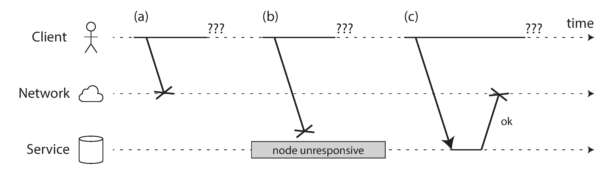
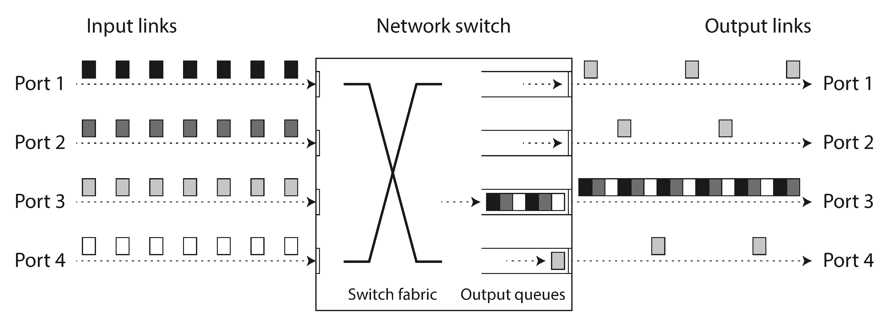
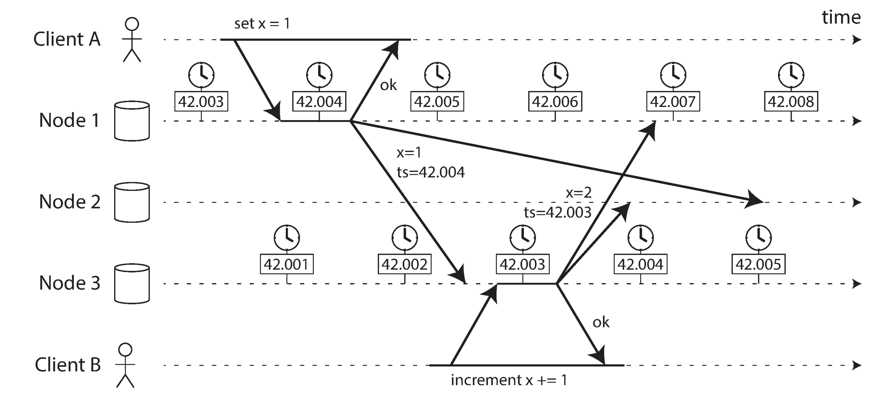
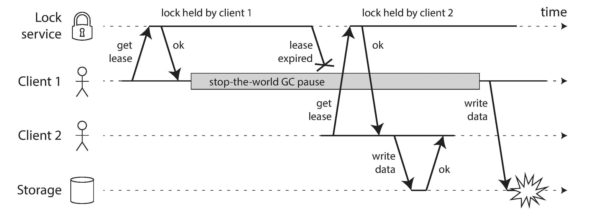
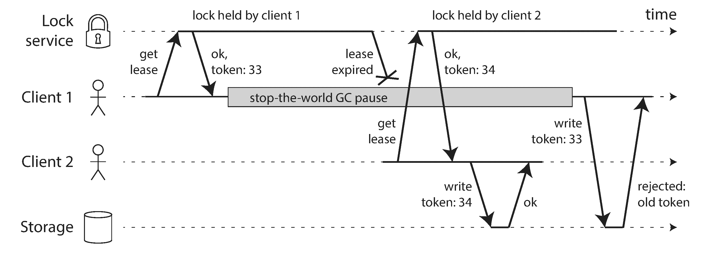

Hey I just met you
The network’s laggy
But here’s my data
So store it maybeKyle Kingsbury, Carly Rae Jepsen and the Perils of Network Partitions (2013)
A recurring theme in the last few chapters has been how systems handle things going wrong. For example, we discussed replica failover (“Handling Node Outages” ), replication lag (“Problems with Replication Lag” ), and concurrency control for transactions (“Weak Isolation Levels” ). As we come to understand various edge cases that can occur in real systems, we get better at handling them.
However, even though we have talked a lot about faults, the last few chapters have still been too optimistic. The reality is even darker. We will now turn our pessimism to the maximum and assume that anything that can go wrong will go wrong. i (Experienced systems operators will tell you that is a reasonable assumption. If you ask nicely, they might tell you some frightening stories while nursing their scars of past battles.)
Working with distributed systems is fundamentally different from writing software on a single computer — and the main difference is that there are lots of new and exciting ways for things to go wrong [1 , 2 ]. In this chapter, we will get a taste of the problems that arise in practice, and an understanding of the things we can and cannot rely on.
In the end, our task as engineers is to build systems that do their job (i.e., meet the guarantees that users are expecting), in spite of everything going wrong. In Chapter 9 , we will look at some examples of algorithms that can provide such guarantees in a distributed system. But first, in this chapter, we must understand what challenges we are up against.
This chapter is a thoroughly pessimistic and depressing overview of things that may go wrong in a distributed system. We will look into problems with networks (“Unreliable Networks” ); clocks and timing issues (“Unreliable Clocks” ); and we’ll discuss to what degree they are avoidable. The consequences of all these issues are disorienting, so we’ll explore how to think about the state of a distributed system and how to reason about things that have happened (“Knowledge, Truth, and Lies” ).
When you are writing a program on a single computer, it normally behaves in a fairly predictable way: either it works or it doesn’t. Buggy software may give the appearance that the computer is sometimes “having a bad day” (a problem that is often fixed by a reboot), but that is mostly just a consequence of badly written software.
There is no fundamental reason why software on a single computer should be flaky: when the hardware is working correctly, the same operation always produces the same result (it is deterministic ). If there is a hardware problem (e.g., memory corruption or a loose connector), the consequence is usually a total system failure (e.g., kernel panic, “blue screen of death,” failure to start up). An individual computer with good software is usually either fully functional or entirely broken, but not something in between.
This is a deliberate choice in the design of computers: if an internal fault occurs, we prefer a computer to crash completely rather than returning a wrong result, because wrong results are difficult and confusing to deal with. Thus, computers hide the fuzzy physical reality on which they are implemented and present an idealized system model that operates with mathematical perfection. A CPU instruction always does the same thing; if you write some data to memory or disk, that data remains intact and doesn’t get randomly corrupted. This design goal of always-correct computation goes all the way back to the very first digital computer [3 ].
When you are writing software that runs on several computers, connected by a network, the situation is fundamentally different. In distributed systems, we are no longer operating in an idealized system model — we have no choice but to confront the messy reality of the physical world. And in the physical world, a remarkably wide range of things can go wrong, as illustrated by this anecdote [4 ]:
In my limited experience I’ve dealt with long-lived network partitions in a single data center (DC), PDU [power distribution unit] failures, switch failures, accidental power cycles of whole racks, whole-DC backbone failures, whole-DC power failures, and a hypoglycemic driver smashing his Ford pickup truck into a DC’s HVAC [heating, ventilation, and air conditioning] system. And I’m not even an ops guy.Coda Hale
In a distributed system, there may well be some parts of the system that are broken in some unpredictable way, even though other parts of the system are working fine. This is known as a partial failure . The difficulty is that partial failures are nondeterministic : if you try to do anything involving multiple nodes and the network, it may sometimes work and sometimes unpredictably fail. As we shall see, you may not even know whether something succeeded or not, as the time it takes for a message to travel across a network is also nondeterministic!
This nondeterminism and possibility of partial failures is what makes distributed systems hard to work with [5 ].
There is a spectrum of philosophies on how to build large-scale computing systems:
With these philosophies come very different approaches to handling faults. In a supercomputer, a job typically checkpoints the state of its computation to durable storage from time to time. If one node fails, a common solution is to simply stop the entire cluster workload. After the faulty node is repaired, the computation is restarted from the last checkpoint [7 , 8 ]. Thus, a supercomputer is more like a single-node computer than a distributed system: it deals with partial failure by letting it escalate into total failure — if any part of the system fails, just let everything crash (like a kernel panic on a single machine).
In this book we focus on systems for implementing internet services, which usually look very different from supercomputers:
If we want to make distributed systems work, we must accept the possibility of partial failure and build fault-tolerance mechanisms into the software. In other words, we need to build a reliable system from unreliable components. (As discussed in “Reliability” , there is no such thing as perfect reliability, so we’ll need to understand the limits of what we can realistically promise.)
Even in smaller systems consisting of only a few nodes, it’s important to think about partial failure. In a small system, it’s quite likely that most of the components are working correctly most of the time. However, sooner or later, some part of the system will become faulty, and the software will have to somehow handle it. The fault handling must be part of the software design, and you (as operator of the software) need to know what behavior to expect from the software in the case of a fault.
It would be unwise to assume that faults are rare and simply hope for the best. It is important to consider a wide range of possible faults — even fairly unlikely ones — and to artificially create such situations in your testing environment to see what happens. In distributed systems, suspicion, pessimism, and paranoia pay off.
As discussed in the introduction to Part II , the distributed systems we focus on in this book are shared-nothing systems : i.e., a bunch of machines connected by a network. The network is the only way those machines can communicate — we assume that each machine has its own memory and disk, and one machine cannot access another machine’s memory or disk (except by making requests to a service over the network).
Shared-nothing is not the only way of building systems, but it has become the dominant approach for building internet services, for several reasons: it’s comparatively cheap because it requires no special hardware, it can make use of commoditized cloud computing services, and it can achieve high reliability through redundancy across multiple geographically distributed datacenters.
The internet and most internal networks in datacenters (often Ethernet) are asynchronous packet networks . In this kind of network, one node can send a message (a packet) to another node, but the network gives no guarantees as to when it will arrive, or whether it will arrive at all. If you send a request and expect a response, many things could go wrong (some of which are illustrated in Figure 8-1 ):

The sender can’t even tell whether the packet was delivered: the only option is for the recipient to send a response message, which may in turn be lost or delayed. These issues are indistinguishable in an asynchronous network: the only information you have is that you haven’t received a response yet. If you send a request to another node and don’t receive a response, it is impossible to tell why.
The usual way of handling this issue is a timeout : after some time you give up waiting and assume that the response is not going to arrive. However, when a timeout occurs, you still don’t know whether the remote node got your request or not (and if the request is still queued somewhere, it may still be delivered to the recipient, even if the sender has given up on it).
We have been building computer networks for decades — one might hope that by now we would have figured out how to make them reliable. However, it seems that we have not yet succeeded.
There are some systematic studies, and plenty of anecdotal evidence, showing that network problems can be surprisingly common, even in controlled environments like a datacenter operated by one company [14 ]. One study in a medium-sized datacenter found about 12 network faults per month, of which half disconnected a single machine, and half disconnected an entire rack [15 ]. Another study measured the failure rates of components like top-of-rack switches, aggregation switches, and load balancers [16 ]. It found that adding redundant networking gear doesn’t reduce faults as much as you might hope, since it doesn’t guard against human error (e.g., misconfigured switches), which is a major cause of outages.
Public cloud services such as EC2 are notorious for having frequent transient network glitches [14 ], and well-managed private datacenter networks can be stabler environments. Nevertheless, nobody is immune from network problems: for example, a problem during a software upgrade for a switch could trigger a network topology reconfiguration, during which network packets could be delayed for more than a minute [17 ]. Sharks might bite undersea cables and damage them [18 ]. Other surprising faults include a network interface that sometimes drops all inbound packets but sends outbound packets successfully [19 ]: just because a network link works in one direction doesn’t guarantee it’s also working in the opposite direction.
When one part of the network is cut off from the rest due to a network fault, that is sometimes called a network partition or netsplit . In this book we’ll generally stick with the more general term network fault , to avoid confusion with partitions (shards) of a storage system, as discussed in Chapter 6 .
Even if network faults are rare in your environment, the fact that faults can occur means that your software needs to be able to handle them. Whenever any communication happens over a network, it may fail — there is no way around it.
If the error handling of network faults is not defined and tested, arbitrarily bad things could happen: for example, the cluster could become deadlocked and permanently unable to serve requests, even when the network recovers [20 ], or it could even delete all of your data [21 ]. If software is put in an unanticipated situation, it may do arbitrary unexpected things.
Handling network faults doesn’t necessarily mean tolerating them: if your network is normally fairly reliable, a valid approach may be to simply show an error message to users while your network is experiencing problems. However, you do need to know how your software reacts to network problems and ensure that the system can recover from them. It may make sense to deliberately trigger network problems and test the system’s response (this is the idea behind Chaos Monkey; see “Reliability” ).
Many systems need to automatically detect faulty nodes. For example:
Unfortunately, the uncertainty about the network makes it difficult to tell whether a node is working or not. In some specific circumstances you might get some feedback to explicitly tell you that something is not working:
RST
or FIN
packet in reply. However, if the node crashed while it was handling your request, you have no way of knowing how much data was actually processed by the remote node [22
].Rapid feedback about a remote node being down is useful, but you can’t count on it. Even if TCP acknowledges that a packet was delivered, the application may have crashed before handling it. If you want to be sure that a request was successful, you need a positive response from the application itself [24 ].
Conversely, if something has gone wrong, you may get an error response at some level of the stack, but in general you have to assume that you will get no response at all. You can retry a few times (TCP retries transparently, but you may also retry at the application level), wait for a timeout to elapse, and eventually declare the node dead if you don’t hear back within the timeout.
If a timeout is the only sure way of detecting a fault, then how long should the timeout be? There is unfortunately no simple answer.
A long timeout means a long wait until a node is declared dead (and during this time, users may have to wait or see error messages). A short timeout detects faults faster, but carries a higher risk of incorrectly declaring a node dead when in fact it has only suffered a temporary slowdown (e.g., due to a load spike on the node or the network).
Prematurely declaring a node dead is problematic: if the node is actually alive and in the middle of performing some action (for example, sending an email), and another node takes over, the action may end up being performed twice. We will discuss this issue in more detail in “Knowledge, Truth, and Lies” , and in Chapters 9 and 11 .
When a node is declared dead, its responsibilities need to be transferred to other nodes, which places additional load on other nodes and the network. If the system is already struggling with high load, declaring nodes dead prematurely can make the problem worse. In particular, it could happen that the node actually wasn’t dead but only slow to respond due to overload; transferring its load to other nodes can cause a cascading failure (in the extreme case, all nodes declare each other dead, and everything stops working).
Imagine a fictitious system with a network that guaranteed a maximum delay for packets — every packet is either delivered within some time d , or it is lost, but delivery never takes longer than d . Furthermore, assume that you can guarantee that a non-failed node always handles a request within some time r . In this case, you could guarantee that every successful request receives a response within time 2d + r — and if you don’t receive a response within that time, you know that either the network or the remote node is not working. If this was true, 2d + r would be a reasonable timeout to use.
Unfortunately, most systems we work with have neither of those guarantees: asynchronous networks have unbounded delays (that is, they try to deliver packets as quickly as possible, but there is no upper limit on the time it may take for a packet to arrive), and most server implementations cannot guarantee that they can handle requests within some maximum time (see “Response time guarantees” ). For failure detection, it’s not sufficient for the system to be fast most of the time: if your timeout is low, it only takes a transient spike in round-trip times to throw the system off-balance.
When driving a car, travel times on road networks often vary most due to traffic congestion. Similarly, the variability of packet delays on computer networks is most often due to queueing [25 ]:

Moreover, TCP considers a packet to be lost if it is not acknowledged within some timeout (which is calculated from observed round-trip times), and lost packets are automatically retransmitted. Although the application does not see the packet loss and retransmission, it does see the resulting delay (waiting for the timeout to expire, and then waiting for the retransmitted packet to be acknowledged).
All of these factors contribute to the variability of network delays. Queueing delays have an especially wide range when a system is close to its maximum capacity: a system with plenty of spare capacity can easily drain queues, whereas in a highly utilized system, long queues can build up very quickly.
In public clouds and multi-tenant datacenters, resources are shared among many customers: the network links and switches, and even each machine’s network interface and CPUs (when running on virtual machines), are shared. Batch workloads such as MapReduce (see Chapter 10 ) can easily saturate network links. As you have no control over or insight into other customers’ usage of the shared resources, network delays can be highly variable if someone near you (a noisy neighbor ) is using a lot of resources [28 , 29 ].
In such environments, you can only choose timeouts experimentally: measure the distribution of network round-trip times over an extended period, and over many machines, to determine the expected variability of delays. Then, taking into account your application’s characteristics, you can determine an appropriate trade-off between failure detection delay and risk of premature timeouts.
Even better, rather than using configured constant timeouts, systems can continually measure response times and their variability (jitter ), and automatically adjust timeouts according to the observed response time distribution. This can be done with a Phi Accrual failure detector [30 ], which is used for example in Akka and Cassandra [31 ]. TCP retransmission timeouts also work similarly [27 ].
Distributed systems would be a lot simpler if we could rely on the network to deliver packets with some fixed maximum delay, and not to drop packets. Why can’t we solve this at the hardware level and make the network reliable so that the software doesn’t need to worry about it?
To answer this question, it’s interesting to compare datacenter networks to the traditional fixed-line telephone network (non-cellular, non-VoIP), which is extremely reliable: delayed audio frames and dropped calls are very rare. A phone call requires a constantly low end-to-end latency and enough bandwidth to transfer the audio samples of your voice. Wouldn’t it be nice to have similar reliability and predictability in computer networks?
When you make a call over the telephone network, it establishes a circuit : a fixed, guaranteed amount of bandwidth is allocated for the call, along the entire route between the two callers. This circuit remains in place until the call ends [32 ]. For example, an ISDN network runs at a fixed rate of 4,000 frames per second. When a call is established, it is allocated 16 bits of space within each frame (in each direction). Thus, for the duration of the call, each side is guaranteed to be able to send exactly 16 bits of audio data every 250 microseconds [33 , 34 ].
This kind of network is synchronous : even as data passes through several routers, it does not suffer from queueing, because the 16 bits of space for the call have already been reserved in the next hop of the network. And because there is no queueing, the maximum end-to-end latency of the network is fixed. We call this a bounded delay .
Note that a circuit in a telephone network is very different from a TCP connection: a circuit is a fixed amount of reserved bandwidth which nobody else can use while the circuit is established, whereas the packets of a TCP connection opportunistically use whatever network bandwidth is available. You can give TCP a variable-sized block of data (e.g., an email or a web page), and it will try to transfer it in the shortest time possible. While a TCP connection is idle, it doesn’t use any bandwidth. ii
If datacenter networks and the internet were circuit-switched networks, it would be possible to establish a guaranteed maximum round-trip time when a circuit was set up. However, they are not: Ethernet and IP are packet-switched protocols, which suffer from queueing and thus unbounded delays in the network. These protocols do not have the concept of a circuit.
Why do datacenter networks and the internet use packet switching? The answer is that they are optimized for bursty traffic . A circuit is good for an audio or video call, which needs to transfer a fairly constant number of bits per second for the duration of the call. On the other hand, requesting a web page, sending an email, or transferring a file doesn’t have any particular bandwidth requirement — we just want it to complete as quickly as possible.
If you wanted to transfer a file over a circuit, you would have to guess a bandwidth allocation. If you guess too low, the transfer is unnecessarily slow, leaving network capacity unused. If you guess too high, the circuit cannot be set up (because the network cannot allow a circuit to be created if its bandwidth allocation cannot be guaranteed). Thus, using circuits for bursty data transfers wastes network capacity and makes transfers unnecessarily slow. By contrast, TCP dynamically adapts the rate of data transfer to the available network capacity.
There have been some attempts to build hybrid networks that support both circuit switching and packet switching, such as ATM. iii InfiniBand has some similarities [35 ]: it implements end-to-end flow control at the link layer, which reduces the need for queueing in the network, although it can still suffer from delays due to link congestion [36 ]. With careful use of quality of service (QoS, prioritization and scheduling of packets) and admission control (rate-limiting senders), it is possible to emulate circuit switching on packet networks, or provide statistically bounded delay [25 , 32 ].
However, such quality of service is currently not enabled in multi-tenant datacenters and public clouds, or when communicating via the internet. iv Currently deployed technology does not allow us to make any guarantees about delays or reliability of the network: we have to assume that network congestion, queueing, and unbounded delays will happen. Consequently, there’s no “correct” value for timeouts — they need to be determined experimentally.
Clocks and time are important. Applications depend on clocks in various ways to answer questions like the following:
Examples 1–4 measure durations (e.g., the time interval between a request being sent and a response being received), whereas examples 5–8 describe points in time (events that occur on a particular date, at a particular time).
In a distributed system, time is a tricky business, because communication is not instantaneous: it takes time for a message to travel across the network from one machine to another. The time when a message is received is always later than the time when it is sent, but due to variable delays in the network, we don’t know how much later. This fact sometimes makes it difficult to determine the order in which things happened when multiple machines are involved.
Moreover, each machine on the network has its own clock, which is an actual hardware device: usually a quartz crystal oscillator. These devices are not perfectly accurate, so each machine has its own notion of time, which may be slightly faster or slower than on other machines. It is possible to synchronize clocks to some degree: the most commonly used mechanism is the Network Time Protocol (NTP), which allows the computer clock to be adjusted according to the time reported by a group of servers [37 ]. The servers in turn get their time from a more accurate time source, such as a GPS receiver.
Modern computers have at least two different kinds of clocks: a time-of-day clock and a monotonic clock . Although they both measure time, it is important to distinguish the two, since they serve different purposes.
A time-of-day clock does what you intuitively expect of a clock: it returns the current date and time according to some calendar (also known as wall-clock time
). For example, clock_gettime(CLOCK_REALTIME)
on Linux
v
and System.currentTimeMillis()
in Java return the number of seconds (or milliseconds) since the epoch
: midnight UTC on January 1, 1970, according to the Gregorian calendar, not counting leap seconds. Some systems use other dates as their reference point.
Time-of-day clocks are usually synchronized with NTP, which means that a timestamp from one machine (ideally) means the same as a timestamp on another machine. However, time-of-day clocks also have various oddities, as described in the next section. In particular, if the local clock is too far ahead of the NTP server, it may be forcibly reset and appear to jump back to a previous point in time. These jumps, as well as the fact that they often ignore leap seconds, make time-of-day clocks unsuitable for measuring elapsed time [38 ].
Time-of-day clocks have also historically had quite a coarse-grained resolution, e.g., moving forward in steps of 10 ms on older Windows systems [39 ]. On recent systems, this is less of a problem.
A monotonic clock is suitable for measuring a duration (time interval), such as a timeout or a service’s response time: clock_gettime(CLOCK_MONOTONIC)
on Linux and System.nanoTime()
in Java are monotonic clocks, for example. The name comes from the fact that they are guaranteed to always move forward (whereas a time-of-day clock may jump back in time).
You can check the value of the monotonic clock at one point in time, do something, and then check the clock again at a later time. The difference between the two values tells you how much time elapsed between the two checks. However, the absolute value of the clock is meaningless: it might be the number of nanoseconds since the computer was started, or something similarly arbitrary. In particular, it makes no sense to compare monotonic clock values from two different computers, because they don’t mean the same thing.
On a server with multiple CPU sockets, there may be a separate timer per CPU, which is not necessarily synchronized with other CPUs. Operating systems compensate for any discrepancy and try to present a monotonic view of the clock to application threads, even as they are scheduled across different CPUs. However, it is wise to take this guarantee of monotonicity with a pinch of salt [40 ].
NTP may adjust the frequency at which the monotonic clock moves forward (this is known as slewing the clock) if it detects that the computer’s local quartz is moving faster or slower than the NTP server. By default, NTP allows the clock rate to be speeded up or slowed down by up to 0.05%, but NTP cannot cause the monotonic clock to jump forward or backward. The resolution of monotonic clocks is usually quite good: on most systems they can measure time intervals in microseconds or less.
In a distributed system, using a monotonic clock for measuring elapsed time (e.g., timeouts) is usually fine, because it doesn’t assume any synchronization between different nodes’ clocks and is not sensitive to slight inaccuracies of measurement.
Monotonic clocks don’t need synchronization, but time-of-day clocks need to be set according to an NTP server or other external time source in order to be useful. Unfortunately, our methods for getting a clock to tell the correct time aren’t nearly as reliable or accurate as you might hope — hardware clocks and NTP can be fickle beasts. To give just a few examples:
It is possible to achieve very good clock accuracy if you care about it sufficiently to invest significant resources. For example, the MiFID II draft European regulation for financial institutions requires all high-frequency trading funds to synchronize their clocks to within 100 microseconds of UTC, in order to help debug market anomalies such as “flash crashes” and to help detect market manipulation [51 ].
Such accuracy can be achieved using GPS receivers, the Precision Time Protocol (PTP) [52 ], and careful deployment and monitoring. However, it requires significant effort and expertise, and there are plenty of ways clock synchronization can go wrong. If your NTP daemon is misconfigured, or a firewall is blocking NTP traffic, the clock error due to drift can quickly become large.
The problem with clocks is that while they seem simple and easy to use, they have a surprising number of pitfalls: a day may not have exactly 86,400 seconds, time-of-day clocks may move backward in time, and the time on one node may be quite different from the time on another node.
Earlier in this chapter we discussed networks dropping and arbitrarily delaying packets. Even though networks are well behaved most of the time, software must be designed on the assumption that the network will occasionally be faulty, and the software must handle such faults gracefully. The same is true with clocks: although they work quite well most of the time, robust software needs to be prepared to deal with incorrect clocks.
Part of the problem is that incorrect clocks easily go unnoticed. If a machine’s CPU is defective or its network is misconfigured, it most likely won’t work at all, so it will quickly be noticed and fixed. On the other hand, if its quartz clock is defective or its NTP client is misconfigured, most things will seem to work fine, even though its clock gradually drifts further and further away from reality. If some piece of software is relying on an accurately synchronized clock, the result is more likely to be silent and subtle data loss than a dramatic crash [53 , 54 ].
Thus, if you use software that requires synchronized clocks, it is essential that you also carefully monitor the clock offsets between all the machines. Any node whose clock drifts too far from the others should be declared dead and removed from the cluster. Such monitoring ensures that you notice the broken clocks before they can cause too much damage.
Let’s consider one particular situation in which it is tempting, but dangerous, to rely on clocks: ordering of events across multiple nodes. For example, if two clients write to a distributed database, who got there first? Which write is the more recent one?
Figure 8-3 illustrates a dangerous use of time-of-day clocks in a database with multi-leader replication (the example is similar to Figure 5-9 ). Client A writes x = 1 on node 1; the write is replicated to node 3; client B increments x on node 3 (we now have x = 2); and finally, both writes are replicated to node 2.

In Figure 8-3 , when a write is replicated to other nodes, it is tagged with a timestamp according to the time-of-day clock on the node where the write originated. The clock synchronization is very good in this example: the skew between node 1 and node 3 is less than 3 ms, which is probably better than you can expect in practice.
Nevertheless, the timestamps in Figure 8-3 fail to order the events correctly: the write x = 1 has a timestamp of 42.004 seconds, but the write x = 2 has a timestamp of 42.003 seconds, even though x = 2 occurred unambiguously later. When node 2 receives these two events, it will incorrectly conclude that x = 1 is the more recent value and drop the write x = 2. In effect, client B’s increment operation will be lost.
This conflict resolution strategy is called last write wins (LWW), and it is widely used in both multi-leader replication and leaderless databases such as Cassandra [53 ] and Riak [54 ] (see “Last write wins (discarding concurrent writes)” ). Some implementations generate timestamps on the client rather than the server, but this doesn’t change the fundamental problems with LWW:
Thus, even though it is tempting to resolve conflicts by keeping the most “recent” value and discarding others, it’s important to be aware that the definition of “recent” depends on a local time-of-day clock, which may well be incorrect. Even with tightly NTP-synchronized clocks, you could send a packet at timestamp 100 ms (according to the sender’s clock) and have it arrive at timestamp 99 ms (according to the recipient’s clock) — so it appears as though the packet arrived before it was sent, which is impossible.
Could NTP synchronization be made accurate enough that such incorrect orderings cannot occur? Probably not, because NTP’s synchronization accuracy is itself limited by the network round-trip time, in addition to other sources of error such as quartz drift. For correct ordering, you would need the clock source to be significantly more accurate than the thing you are measuring (namely network delay).
So-called logical clocks [56 , 57 ], which are based on incrementing counters rather than an oscillating quartz crystal, are a safer alternative for ordering events (see “Detecting Concurrent Writes” ). Logical clocks do not measure the time of day or the number of seconds elapsed, only the relative ordering of events (whether one event happened before or after another). In contrast, time-of-day and monotonic clocks, which measure actual elapsed time, are also known as physical clocks . We’ll look at ordering a bit more in “Ordering Guarantees” .
You may be able to read a machine’s time-of-day clock with microsecond or even nanosecond resolution. But even if you can get such a fine-grained measurement, that doesn’t mean the value is actually accurate to such precision. In fact, it most likely is not — as mentioned previously, the drift in an imprecise quartz clock can easily be several milliseconds, even if you synchronize with an NTP server on the local network every minute. With an NTP server on the public internet, the best possible accuracy is probably to the tens of milliseconds, and the error may easily spike to over 100 ms when there is network congestion [57 ].
Thus, it doesn’t make sense to think of a clock reading as a point in time — it is more like a range of times, within a confidence interval: for example, a system may be 95% confident that the time now is between 10.3 and 10.5 seconds past the minute, but it doesn’t know any more precisely than that [58 ]. If we only know the time +/– 100 ms, the microsecond digits in the timestamp are essentially meaningless.
The uncertainty bound can be calculated based on your time source. If you have a GPS receiver or atomic (caesium) clock directly attached to your computer, the expected error range is reported by the manufacturer. If you’re getting the time from a server, the uncertainty is based on the expected quartz drift since your last sync with the server, plus the NTP server’s uncertainty, plus the network round-trip time to the server (to a first approximation, and assuming you trust the server).
Unfortunately, most systems don’t expose this uncertainty: for example, when you call clock_gettime()
, the return value doesn’t tell you the expected error of the timestamp, so you don’t know if its confidence interval is five milliseconds or five years.
An interesting exception is Google’s TrueTime
API in Spanner [41
], which explicitly reports the confidence interval on the local clock. When you ask it for the current time, you get back two values: [earliest
, latest
]
, which are the earliest possible
and the latest possible
timestamp. Based on its uncertainty calculations, the clock knows that the actual current time is somewhere within that interval. The width of the interval depends, among other things, on how long it has been since the local quartz clock was last synchronized with a more accurate clock source.
In “Snapshot Isolation and Repeatable Read” we discussed snapshot isolation , which is a very useful feature in databases that need to support both small, fast read-write transactions and large, long-running read-only transactions (e.g., for backups or analytics). It allows read-only transactions to see the database in a consistent state at a particular point in time, without locking and interfering with read-write transactions.
The most common implementation of snapshot isolation requires a monotonically increasing transaction ID. If a write happened later than the snapshot (i.e., the write has a greater transaction ID than the snapshot), that write is invisible to the snapshot transaction. On a single-node database, a simple counter is sufficient for generating transaction IDs.
However, when a database is distributed across many machines, potentially in multiple datacenters, a global, monotonically increasing transaction ID (across all partitions) is difficult to generate, because it requires coordination. The transaction ID must reflect causality: if transaction B reads a value that was written by transaction A, then B must have a higher transaction ID than A — otherwise, the snapshot would not be consistent. With lots of small, rapid transactions, creating transaction IDs in a distributed system becomes an untenable bottleneck. vi
Can we use the timestamps from synchronized time-of-day clocks as transaction IDs? If we could get the synchronization good enough, they would have the right properties: later transactions have a higher timestamp. The problem, of course, is the uncertainty about clock accuracy.
Spanner implements snapshot isolation across datacenters in this way [59 , 60 ]. It uses the clock’s confidence interval as reported by the TrueTime API, and is based on the following observation: if you have two confidence intervals, each consisting of an earliest and latest possible timestamp (A = [Aearliest , Alatest ] and B = [Bearliest , Blatest ]), and those two intervals do not overlap (i.e., Aearliest < Alatest < Bearliest < Blatest ), then B definitely happened after A — there can be no doubt. Only if the intervals overlap are we unsure in which order A and B happened.
In order to ensure that transaction timestamps reflect causality, Spanner deliberately waits for the length of the confidence interval before committing a read-write transaction. By doing so, it ensures that any transaction that may read the data is at a sufficiently later time, so their confidence intervals do not overlap. In order to keep the wait time as short as possible, Spanner needs to keep the clock uncertainty as small as possible; for this purpose, Google deploys a GPS receiver or atomic clock in each datacenter, allowing clocks to be synchronized to within about 7 ms [41 ].
Using clock synchronization for distributed transaction semantics is an area of active research [57 , 61 , 62 ]. These ideas are interesting, but they have not yet been implemented in mainstream databases outside of Google.
Let’s consider another example of dangerous clock use in a distributed system. Say you have a database with a single leader per partition. Only the leader is allowed to accept writes. How does a node know that it is still leader (that it hasn’t been declared dead by the others), and that it may safely accept writes?
One option is for the leader to obtain a lease from the other nodes, which is similar to a lock with a timeout [63 ]. Only one node can hold the lease at any one time — thus, when a node obtains a lease, it knows that it is the leader for some amount of time, until the lease expires. In order to remain leader, the node must periodically renew the lease before it expires. If the node fails, it stops renewing the lease, so another node can take over when it expires.
You can imagine the request-handling loop looking something like this:
while(true){request=getIncomingRequest();// Ensure that the lease always has at least 10 seconds remainingif(lease.expiryTimeMillis-System.currentTimeMillis()<10000){lease=lease.renew();}if(lease.isValid()){process(request);}}
What’s wrong with this code? Firstly, it’s relying on synchronized clocks: the expiry time on the lease is set by a different machine (where the expiry may be calculated as the current time plus 30 seconds, for example), and it’s being compared to the local system clock. If the clocks are out of sync by more than a few seconds, this code will start doing strange things.
Secondly, even if we change the protocol to only use the local monotonic clock, there is another problem: the code assumes that very little time passes between the point that it checks the time (System.currentTimeMillis()
) and the time when the request is processed (process(request)
). Normally this code runs very quickly, so the 10 second buffer is more than enough to ensure that the lease doesn’t expire in the middle of processing a request.
However, what if there is an unexpected pause in the execution of the program? For example, imagine the thread stops for 15 seconds around the line lease.isValid()
before finally continuing. In that case, it’s likely that the lease will have expired by the time the request is processed, and another node has already taken over as leader. However, there is nothing to tell this thread that it was paused for so long, so this code won’t notice that the lease has expired until the next iteration of the loop — by which time it may have already done something unsafe by processing the request.
Is it crazy to assume that a thread might be paused for so long? Unfortunately not. There are various reasons why this could happen:
SIGSTOP
signal, for example by pressing Ctrl-Z in a shell. This signal immediately stops the process from getting any more CPU cycles until it is resumed with SIGCONT
, at which point it continues running where it left off. Even if your environment does not normally use SIGSTOP
, it might be sent accidentally by an operations engineer.All of these occurrences can preempt the running thread at any point and resume it at some later time, without the thread even noticing. The problem is similar to making multi-threaded code on a single machine thread-safe: you can’t assume anything about timing, because arbitrary context switches and parallelism may occur.
When writing multi-threaded code on a single machine, we have fairly good tools for making it thread-safe: mutexes, semaphores, atomic counters, lock-free data structures, blocking queues, and so on. Unfortunately, these tools don’t directly translate to distributed systems, because a distributed system has no shared memory — only messages sent over an unreliable network.
A node in a distributed system must assume that its execution can be paused for a significant length of time at any point, even in the middle of a function. During the pause, the rest of the world keeps moving and may even declare the paused node dead because it’s not responding. Eventually, the paused node may continue running, without even noticing that it was asleep until it checks its clock sometime later.
In many programming languages and operating systems, threads and processes may pause for an unbounded amount of time, as discussed. Those reasons for pausing can be eliminated if you try hard enough.
Some software runs in environments where a failure to respond within a specified time can cause serious damage: computers that control aircraft, rockets, robots, cars, and other physical objects must respond quickly and predictably to their sensor inputs. In these systems, there is a specified deadline by which the software must respond; if it doesn’t meet the deadline, that may cause a failure of the entire system. These are so-called hard real-time systems.
In embedded systems, real-time means that a system is carefully designed and tested to meet specified timing guarantees in all circumstances. This meaning is in contrast to the more vague use of the term real-time on the web, where it describes servers pushing data to clients and stream processing without hard response time constraints (see Chapter 11 ).
For example, if your car’s onboard sensors detect that you are currently experiencing a crash, you wouldn’t want the release of the airbag to be delayed due to an inopportune GC pause in the airbag release system.
Providing real-time guarantees in a system requires support from all levels of the software stack: a real-time operating system (RTOS) that allows processes to be scheduled with a guaranteed allocation of CPU time in specified intervals is needed; library functions must document their worst-case execution times; dynamic memory allocation may be restricted or disallowed entirely (real-time garbage collectors exist, but the application must still ensure that it doesn’t give the GC too much work to do); and an enormous amount of testing and measurement must be done to ensure that guarantees are being met.
All of this requires a large amount of additional work and severely restricts the range of programming languages, libraries, and tools that can be used (since most languages and tools do not provide real-time guarantees). For these reasons, developing real-time systems is very expensive, and they are most commonly used in safety-critical embedded devices. Moreover, “real-time” is not the same as “high-performance” — in fact, real-time systems may have lower throughput, since they have to prioritize timely responses above all else (see also “Latency and Resource Utilization” ).
For most server-side data processing systems, real-time guarantees are simply not economical or appropriate. Consequently, these systems must suffer the pauses and clock instability that come from operating in a non-real-time environment.
The negative effects of process pauses can be mitigated without resorting to expensive real-time scheduling guarantees. Language runtimes have some flexibility around when they schedule garbage collections, because they can track the rate of object allocation and the remaining free memory over time.
An emerging idea is to treat GC pauses like brief planned outages of a node, and to let other nodes handle requests from clients while one node is collecting its garbage. If the runtime can warn the application that a node soon requires a GC pause, the application can stop sending new requests to that node, wait for it to finish processing outstanding requests, and then perform the GC while no requests are in progress. This trick hides GC pauses from clients and reduces the high percentiles of response time [70 , 71 ]. Some latency-sensitive financial trading systems [72 ] use this approach.
A variant of this idea is to use the garbage collector only for short-lived objects (which are fast to collect) and to restart processes periodically, before they accumulate enough long-lived objects to require a full GC of long-lived objects [65 , 73 ]. One node can be restarted at a time, and traffic can be shifted away from the node before the planned restart, like in a rolling upgrade (see Chapter 4 ).
These measures cannot fully prevent garbage collection pauses, but they can usefully reduce their impact on the application.
So far in this chapter we have explored the ways in which distributed systems are different from programs running on a single computer: there is no shared memory, only message passing via an unreliable network with variable delays, and the systems may suffer from partial failures, unreliable clocks, and processing pauses.
The consequences of these issues are profoundly disorienting if you’re not used to distributed systems. A node in the network cannot know anything for sure — it can only make guesses based on the messages it receives (or doesn’t receive) via the network. A node can only find out what state another node is in (what data it has stored, whether it is correctly functioning, etc.) by exchanging messages with it. If a remote node doesn’t respond, there is no way of knowing what state it is in, because problems in the network cannot reliably be distinguished from problems at a node.
Discussions of these systems border on the philosophical: What do we know to be true or false in our system? How sure can we be of that knowledge, if the mechanisms for perception and measurement are unreliable? Should software systems obey the laws that we expect of the physical world, such as cause and effect?
Fortunately, we don’t need to go as far as figuring out the meaning of life. In a distributed system, we can state the assumptions we are making about the behavior (the system model ) and design the actual system in such a way that it meets those assumptions. Algorithms can be proved to function correctly within a certain system model. This means that reliable behavior is achievable, even if the underlying system model provides very few guarantees.
However, although it is possible to make software well behaved in an unreliable system model, it is not straightforward to do so. In the rest of this chapter we will further explore the notions of knowledge and truth in distributed systems, which will help us think about the kinds of assumptions we can make and the guarantees we may want to provide. In Chapter 9 we will proceed to look at some examples of distributed systems, algorithms that provide particular guarantees under particular assumptions.
Imagine a network with an asymmetric fault: a node is able to receive all messages sent to it, but any outgoing messages from that node are dropped or delayed [19 ]. Even though that node is working perfectly well, and is receiving requests from other nodes, the other nodes cannot hear its responses. After some timeout, the other nodes declare it dead, because they haven’t heard from the node. The situation unfolds like a nightmare: the semi-disconnected node is dragged to the graveyard, kicking and screaming “I’m not dead!” — but since nobody can hear its screaming, the funeral procession continues with stoic determination.
In a slightly less nightmarish scenario, the semi-disconnected node may notice that the messages it is sending are not being acknowledged by other nodes, and so realize that there must be a fault in the network. Nevertheless, the node is wrongly declared dead by the other nodes, and the semi-disconnected node cannot do anything about it.
As a third scenario, imagine a node that experiences a long stop-the-world garbage collection pause. All of the node’s threads are preempted by the GC and paused for one minute, and consequently, no requests are processed and no responses are sent. The other nodes wait, retry, grow impatient, and eventually declare the node dead and load it onto the hearse. Finally, the GC finishes and the node’s threads continue as if nothing had happened. The other nodes are surprised as the supposedly dead node suddenly raises its head out of the coffin, in full health, and starts cheerfully chatting with bystanders. At first, the GCing node doesn’t even realize that an entire minute has passed and that it was declared dead — from its perspective, hardly any time has passed since it was last talking to the other nodes.
The moral of these stories is that a node cannot necessarily trust its own judgment of a situation. A distributed system cannot exclusively rely on a single node, because a node may fail at any time, potentially leaving the system stuck and unable to recover. Instead, many distributed algorithms rely on a quorum , that is, voting among the nodes (see “Quorums for reading and writing” ): decisions require some minimum number of votes from several nodes in order to reduce the dependence on any one particular node.
That includes decisions about declaring nodes dead. If a quorum of nodes declares another node dead, then it must be considered dead, even if that node still very much feels alive. The individual node must abide by the quorum decision and step down.
Most commonly, the quorum is an absolute majority of more than half the nodes (although other kinds of quorums are possible). A majority quorum allows the system to continue working if individual nodes have failed (with three nodes, one failure can be tolerated; with five nodes, two failures can be tolerated). However, it is still safe, because there can only be only one majority in the system — there cannot be two majorities with conflicting decisions at the same time. We will discuss the use of quorums in more detail when we get to consensus algorithms in Chapter 9 .
Frequently, a system requires there to be only one of some thing. For example:
Implementing this in a distributed system requires care: even if a node believes that it is “the chosen one” (the leader of the partition, the holder of the lock, the request handler of the user who successfully grabbed the username), that doesn’t necessarily mean a quorum of nodes agrees! A node may have formerly been the leader, but if the other nodes declared it dead in the meantime (e.g., due to a network interruption or GC pause), it may have been demoted and another leader may have already been elected.
If a node continues acting as the chosen one, even though the majority of nodes have declared it dead, it could cause problems in a system that is not carefully designed. Such a node could send messages to other nodes in its self-appointed capacity, and if other nodes believe it, the system as a whole may do something incorrect.
For example, Figure 8-4 shows a data corruption bug due to an incorrect implementation of locking. (The bug is not theoretical: HBase used to have this problem [74 , 75 ].) Say you want to ensure that a file in a storage service can only be accessed by one client at a time, because if multiple clients tried to write to it, the file would become corrupted. You try to implement this by requiring a client to obtain a lease from a lock service before accessing the file.

The problem is an example of what we discussed in “Process Pauses” : if the client holding the lease is paused for too long, its lease expires. Another client can obtain a lease for the same file, and start writing to the file. When the paused client comes back, it believes (incorrectly) that it still has a valid lease and proceeds to also write to the file. As a result, the clients’ writes clash and corrupt the file.
When using a lock or lease to protect access to some resource, such as the file storage in Figure 8-4 , we need to ensure that a node that is under a false belief of being “the chosen one” cannot disrupt the rest of the system. A fairly simple technique that achieves this goal is called fencing , and is illustrated in Figure 8-5 .

Let’s assume that every time the lock server grants a lock or lease, it also returns a fencing token , which is a number that increases every time a lock is granted (e.g., incremented by the lock service). We can then require that every time a client sends a write request to the storage service, it must include its current fencing token.
In Figure 8-5 , client 1 acquires the lease with a token of 33, but then it goes into a long pause and the lease expires. Client 2 acquires the lease with a token of 34 (the number always increases) and then sends its write request to the storage service, including the token of 34. Later, client 1 comes back to life and sends its write to the storage service, including its token value 33. However, the storage server remembers that it has already processed a write with a higher token number (34), and so it rejects the request with token 33.
If ZooKeeper is used as lock service, the transaction ID zxid
or the node version
cversion
can be used as fencing token. Since they are guaranteed to be monotonically increasing, they have the required properties [74
].
Note that this mechanism requires the resource itself to take an active role in checking tokens by rejecting any writes with an older token than one that has already been processed — it is not sufficient to rely on clients checking their lock status themselves. For resources that do not explicitly support fencing tokens, you might still be able work around the limitation (for example, in the case of a file storage service you could include the fencing token in the filename). However, some kind of check is necessary to avoid processing requests outside of the lock’s protection.
Checking a token on the server side may seem like a downside, but it is arguably a good thing: it is unwise for a service to assume that its clients will always be well behaved, because the clients are often run by people whose priorities are very different from the priorities of the people running the service [76 ]. Thus, it is a good idea for any service to protect itself from accidentally abusive clients.
Fencing tokens can detect and block a node that is inadvertently acting in error (e.g., because it hasn’t yet found out that its lease has expired). However, if the node deliberately wanted to subvert the system’s guarantees, it could easily do so by sending messages with a fake fencing token.
In this book we assume that nodes are unreliable but honest: they may be slow or never respond (due to a fault), and their state may be outdated (due to a GC pause or network delays), but we assume that if a node does respond, it is telling the “truth”: to the best of its knowledge, it is playing by the rules of the protocol.
Distributed systems problems become much harder if there is a risk that nodes may “lie” (send arbitrary faulty or corrupted responses) — for example, if a node may claim to have received a particular message when in fact it didn’t. Such behavior is known as a Byzantine fault , and the problem of reaching consensus in this untrusting environment is known as the Byzantine Generals Problem [77 ].
A system is Byzantine fault-tolerant if it continues to operate correctly even if some of the nodes are malfunctioning and not obeying the protocol, or if malicious attackers are interfering with the network. This concern is relevant in certain specific circumstances. For example:
However, in the kinds of systems we discuss in this book, we can usually safely assume that there are no Byzantine faults. In your datacenter, all the nodes are controlled by your organization (so they can hopefully be trusted) and radiation levels are low enough that memory corruption is not a major problem. Protocols for making systems Byzantine fault-tolerant are quite complicated [84 ], and fault-tolerant embedded systems rely on support from the hardware level [81 ]. In most server-side data systems, the cost of deploying Byzantine fault-tolerant solutions makes them impractical.
Web applications do need to expect arbitrary and malicious behavior of clients that are under end-user control, such as web browsers. This is why input validation, sanitization, and output escaping are so important: to prevent SQL injection and cross-site scripting, for example. However, we typically don’t use Byzantine fault-tolerant protocols here, but simply make the server the authority on deciding what client behavior is and isn’t allowed. In peer-to-peer networks, where there is no such central authority, Byzantine fault tolerance is more relevant.
A bug in the software could be regarded as a Byzantine fault, but if you deploy the same software to all nodes, then a Byzantine fault-tolerant algorithm cannot save you. Most Byzantine fault-tolerant algorithms require a supermajority of more than two-thirds of the nodes to be functioning correctly (i.e., if you have four nodes, at most one may malfunction). To use this approach against bugs, you would have to have four independent implementations of the same software and hope that a bug only appears in one of the four implementations.
Similarly, it would be appealing if a protocol could protect us from vulnerabilities, security compromises, and malicious attacks. Unfortunately, this is not realistic either: in most systems, if an attacker can compromise one node, they can probably compromise all of them, because they are probably running the same software. Thus, traditional mechanisms (authentication, access control, encryption, firewalls, and so on) continue to be the main protection against attackers.
Although we assume that nodes are generally honest, it can be worth adding mechanisms to software that guard against weak forms of “lying” — for example, invalid messages due to hardware issues, software bugs, and misconfiguration. Such protection mechanisms are not full-blown Byzantine fault tolerance, as they would not withstand a determined adversary, but they are nevertheless simple and pragmatic steps toward better reliability. For example:
Many algorithms have been designed to solve distributed systems problems — for example, we will examine solutions for the consensus problem in Chapter 9 . In order to be useful, these algorithms need to tolerate the various faults of distributed systems that we discussed in this chapter.
Algorithms need to be written in a way that does not depend too heavily on the details of the hardware and software configuration on which they are run. This in turn requires that we somehow formalize the kinds of faults that we expect to happen in a system. We do this by defining a system model , which is an abstraction that describes what things an algorithm may assume.
With regard to timing assumptions, three system models are in common use:
The synchronous model assumes bounded network delay, bounded process pauses, and bounded clock error. This does not imply exactly synchronized clocks or zero network delay; it just means you know that network delay, pauses, and clock drift will never exceed some fixed upper bound [88 ]. The synchronous model is not a realistic model of most practical systems, because (as discussed in this chapter) unbounded delays and pauses do occur.
Partial synchrony means that a system behaves like a synchronous system most of the time , but it sometimes exceeds the bounds for network delay, process pauses, and clock drift [88 ]. This is a realistic model of many systems: most of the time, networks and processes are quite well behaved — otherwise we would never be able to get anything done — but we have to reckon with the fact that any timing assumptions may be shattered occasionally. When this happens, network delay, pauses, and clock error may become arbitrarily large.
Moreover, besides timing issues, we have to consider node failures. The three most common system models for nodes are:
In the crash-stop model, an algorithm may assume that a node can fail in only one way, namely by crashing. This means that the node may suddenly stop responding at any moment, and thereafter that node is gone forever — it never comes back.
We assume that nodes may crash at any moment, and perhaps start responding again after some unknown time. In the crash-recovery model, nodes are assumed to have stable storage (i.e., nonvolatile disk storage) that is preserved across crashes, while the in-memory state is assumed to be lost.
For modeling real systems, the partially synchronous model with crash-recovery faults is generally the most useful model. But how do distributed algorithms cope with that model?
To define what it means for an algorithm to be correct , we can describe its properties . For example, the output of a sorting algorithm has the property that for any two distinct elements of the output list, the element further to the left is smaller than the element further to the right. That is simply a formal way of defining what it means for a list to be sorted.
Similarly, we can write down the properties we want of a distributed algorithm to define what it means to be correct. For example, if we are generating fencing tokens for a lock (see “Fencing tokens” ), we may require the algorithm to have the following properties:
No two requests for a fencing token return the same value.
If request x returned token t x , and request y returned token t y , and x completed before y began, then t x < t y .
A node that requests a fencing token and does not crash eventually receives a response.
An algorithm is correct in some system model if it always satisfies its properties in all situations that we assume may occur in that system model. But how does this make sense? If all nodes crash, or all network delays suddenly become infinitely long, then no algorithm will be able to get anything done.
To clarify the situation, it is worth distinguishing between two different kinds of properties: safety and liveness properties. In the example just given, uniqueness and monotonic sequence are safety properties, but availability is a liveness property.
What distinguishes the two kinds of properties? A giveaway is that liveness properties often include the word “eventually” in their definition. (And yes, you guessed it — eventual consistency is a liveness property [89 ].)
Safety is often informally defined as nothing bad happens , and liveness as something good eventually happens . However, it’s best to not read too much into those informal definitions, because the meaning of good and bad is subjective. The actual definitions of safety and liveness are precise and mathematical [90 ]:
An advantage of distinguishing between safety and liveness properties is that it helps us deal with difficult system models. For distributed algorithms, it is common to require that safety properties always hold, in all possible situations of a system model [88 ]. That is, even if all nodes crash, or the entire network fails, the algorithm must nevertheless ensure that it does not return a wrong result (i.e., that the safety properties remain satisfied).
However, with liveness properties we are allowed to make caveats: for example, we could say that a request needs to receive a response only if a majority of nodes have not crashed, and only if the network eventually recovers from an outage. The definition of the partially synchronous model requires that eventually the system returns to a synchronous state — that is, any period of network interruption lasts only for a finite duration and is then repaired.
Safety and liveness properties and system models are very useful for reasoning about the correctness of a distributed algorithm. However, when implementing an algorithm in practice, the messy facts of reality come back to bite you again, and it becomes clear that the system model is a simplified abstraction of reality.
For example, algorithms in the crash-recovery model generally assume that data in stable storage survives crashes. However, what happens if the data on disk is corrupted, or the data is wiped out due to hardware error or misconfiguration [91 ]? What happens if a server has a firmware bug and fails to recognize its hard drives on reboot, even though the drives are correctly attached to the server [92 ]?
Quorum algorithms (see “Quorums for reading and writing” ) rely on a node remembering the data that it claims to have stored. If a node may suffer from amnesia and forget previously stored data, that breaks the quorum condition, and thus breaks the correctness of the algorithm. Perhaps a new system model is needed, in which we assume that stable storage mostly survives crashes, but may sometimes be lost. But that model then becomes harder to reason about.
The theoretical description of an algorithm can declare that certain things are simply assumed not to happen — and in non-Byzantine systems, we do have to make some assumptions about faults that can and cannot happen. However, a real implementation may still have to include code to handle the case where something happens that was assumed to be impossible, even if that handling boils down to printf("Sucks to be you")
and exit(666)
— i.e., letting a human operator clean up the mess [93
]. (This is arguably the difference between computer science and software engineering.)
That is not to say that theoretical, abstract system models are worthless — quite the opposite. They are incredibly helpful for distilling down the complexity of real systems to a manageable set of faults that we can reason about, so that we can understand the problem and try to solve it systematically. We can prove algorithms correct by showing that their properties always hold in some system model.
Proving an algorithm correct does not mean its implementation on a real system will necessarily always behave correctly. But it’s a very good first step, because the theoretical analysis can uncover problems in an algorithm that might remain hidden for a long time in a real system, and that only come to bite you when your assumptions (e.g., about timing) are defeated due to unusual circumstances. Theoretical analysis and empirical testing are equally important.
In this chapter we have discussed a wide range of problems that can occur in distributed systems, including:
The fact that such partial failures can occur is the defining characteristic of distributed systems. Whenever software tries to do anything involving other nodes, there is the possibility that it may occasionally fail, or randomly go slow, or not respond at all (and eventually time out). In distributed systems, we try to build tolerance of partial failures into software, so that the system as a whole may continue functioning even when some of its constituent parts are broken.
To tolerate faults, the first step is to detect them, but even that is hard. Most systems don’t have an accurate mechanism of detecting whether a node has failed, so most distributed algorithms rely on timeouts to determine whether a remote node is still available. However, timeouts can’t distinguish between network and node failures, and variable network delay sometimes causes a node to be falsely suspected of crashing. Moreover, sometimes a node can be in a degraded state: for example, a Gigabit network interface could suddenly drop to 1 Kb/s throughput due to a driver bug [94 ]. Such a node that is “limping” but not dead can be even more difficult to deal with than a cleanly failed node.
Once a fault is detected, making a system tolerate it is not easy either: there is no global variable, no shared memory, no common knowledge or any other kind of shared state between the machines. Nodes can’t even agree on what time it is, let alone on anything more profound. The only way information can flow from one node to another is by sending it over the unreliable network. Major decisions cannot be safely made by a single node, so we require protocols that enlist help from other nodes and try to get a quorum to agree.
If you’re used to writing software in the idealized mathematical perfection of a single computer, where the same operation always deterministically returns the same result, then moving to the messy physical reality of distributed systems can be a bit of a shock. Conversely, distributed systems engineers will often regard a problem as trivial if it can be solved on a single computer [5 ], and indeed a single computer can do a lot nowadays [95 ]. If you can avoid opening Pandora’s box and simply keep things on a single machine, it is generally worth doing so.
However, as discussed in the introduction to Part II , scalability is not the only reason for wanting to use a distributed system. Fault tolerance and low latency (by placing data geographically close to users) are equally important goals, and those things cannot be achieved with a single node.
In this chapter we also went on some tangents to explore whether the unreliability of networks, clocks, and processes is an inevitable law of nature. We saw that it isn’t: it is possible to give hard real-time response guarantees and bounded delays in networks, but doing so is very expensive and results in lower utilization of hardware resources. Most non-safety-critical systems choose cheap and unreliable over expensive and reliable.
We also touched on supercomputers, which assume reliable components and thus have to be stopped and restarted entirely when a component does fail. By contrast, distributed systems can run forever without being interrupted at the service level, because all faults and maintenance can be handled at the node level — at least in theory. (In practice, if a bad configuration change is rolled out to all nodes, that will still bring a distributed system to its knees.)
This chapter has been all about problems, and has given us a bleak outlook. In the next chapter we will move on to solutions, and discuss some algorithms that have been designed to cope with all the problems in distributed systems.
i With one exception: we will assume that faults are non-Byzantine (see “Byzantine Faults” ).
ii Except perhaps for an occasional keepalive packet, if TCP keepalive is enabled.
iii Asynchronous Transfer Mode (ATM) was a competitor to Ethernet in the 1980s [32 ], but it didn’t gain much adoption outside of telephone network core switches. It has nothing to do with automatic teller machines (also known as cash machines), despite sharing an acronym. Perhaps, in some parallel universe, the internet is based on something like ATM — in that universe, internet video calls are probably a lot more reliable than they are in ours, because they don’t suffer from dropped and delayed packets.
iv Peering agreements between internet service providers and the establishment of routes through the Border Gateway Protocol (BGP), bear closer resemblance to circuit switching than IP itself. At this level, it is possible to buy dedicated bandwidth. However, internet routing operates at the level of networks, not individual connections between hosts, and at a much longer timescale.
v Although the clock is called real-time , it has nothing to do with real-time operating systems, as discussed in “Response time guarantees” .
vi There are distributed sequence number generators, such as Twitter’s Snowflake, that generate approximately monotonically increasing unique IDs in a scalable way (e.g., by allocating blocks of the ID space to different nodes). However, they typically cannot guarantee an ordering that is consistent with causality, because the timescale at which blocks of IDs are assigned is longer than the timescale of database reads and writes. See also “Ordering Guarantees” .
[1 ] Mark Cavage: “There’s Just No Getting Around It: You’re Building a Distributed System ,” ACM Queue , volume 11, number 4, pages 80-89, April 2013. doi:10.1145/2466486.2482856
[2 ] Jay Kreps: “Getting Real About Distributed System Reliability ,” blog.empathybox.com , March 19, 2012.
[3 ] Sydney Padua: The Thrilling Adventures of Lovelace and Babbage: The (Mostly) True Story of the First Computer . Particular Books, April 2015. ISBN: 978-0-141-98151-2
[4 ] Coda Hale: “You Can’t Sacrifice Partition Tolerance ,” codahale.com , October 7, 2010.
[5 ] Jeff Hodges: “Notes on Distributed Systems for Young Bloods ,” somethingsimilar.com , January 14, 2013.
[6 ] Antonio Regalado: “Who Coined ‘Cloud Computing’? ,” technologyreview.com , October 31, 2011.
[7 ] Luiz André Barroso, Jimmy Clidaras, and Urs Hölzle: “The Datacenter as a Computer: An Introduction to the Design of Warehouse-Scale Machines, Second Edition ,” Synthesis Lectures on Computer Architecture , volume 8, number 3, Morgan & Claypool Publishers, July 2013. doi:10.2200/S00516ED2V01Y201306CAC024 , ISBN: 978-1-627-05010-4
[8 ] David Fiala, Frank Mueller, Christian Engelmann, et al.: “Detection and Correction of Silent Data Corruption for Large-Scale High-Performance Computing ,” at International Conference for High Performance Computing, Networking, Storage and Analysis (SC12), November 2012.
[9 ] Arjun Singh, Joon Ong, Amit Agarwal, et al.: “Jupiter Rising: A Decade of Clos Topologies and Centralized Control in Google’s Datacenter Network ,” at Annual Conference of the ACM Special Interest Group on Data Communication (SIGCOMM), August 2015. doi:10.1145/2785956.2787508
[10 ] Glenn K. Lockwood: “Hadoop’s Uncomfortable Fit in HPC ,” glennklockwood.blogspot.co.uk , May 16, 2014.
[11 ] John von Neumann: “Probabilistic Logics and the Synthesis of Reliable Organisms from Unreliable Components ,” in Automata Studies (AM-34) , edited by Claude E. Shannon and John McCarthy, Princeton University Press, 1956. ISBN: 978-0-691-07916-5
[12 ] Richard W. Hamming: The Art of Doing Science and Engineering . Taylor & Francis, 1997. ISBN: 978-9-056-99500-3
[13 ] Claude E. Shannon: “A Mathematical Theory of Communication ,” The Bell System Technical Journal , volume 27, number 3, pages 379–423 and 623–656, July 1948.
[14 ] Peter Bailis and Kyle Kingsbury: “The Network Is Reliable ,” ACM Queue , volume 12, number 7, pages 48-55, July 2014. doi:10.1145/2639988.2639988
[15 ] Joshua B. Leners, Trinabh Gupta, Marcos K. Aguilera, and Michael Walfish: “Taming Uncertainty in Distributed Systems with Help from the Network ,” at 10th European Conference on Computer Systems (EuroSys), April 2015. doi:10.1145/2741948.2741976
[16 ] Phillipa Gill, Navendu Jain, and Nachiappan Nagappan: “Understanding Network Failures in Data Centers: Measurement, Analysis, and Implications ,” at ACM SIGCOMM Conference , August 2011. doi:10.1145/2018436.2018477
[17 ] Mark Imbriaco: “Downtime Last Saturday ,” github.com , December 26, 2012.
[18 ] Will Oremus: “The Global Internet Is Being Attacked by Sharks, Google Confirms ,” slate.com , August 15, 2014.
[19 ] Marc A. Donges: “Re: bnx2 cards Intermittantly Going Offline ,” Message to Linux netdev mailing list, spinics.net , September 13, 2012.
[20 ] Kyle Kingsbury: “Call Me Maybe: Elasticsearch ,” aphyr.com , June 15, 2014.
[21 ] Salvatore Sanfilippo: “A Few Arguments About Redis Sentinel Properties and Fail Scenarios ,” antirez.com , October 21, 2014.
[22 ] Bert Hubert: “The Ultimate SO_LINGER Page, or: Why Is My TCP Not Reliable ,” blog.netherlabs.nl , January 18, 2009.
[23 ] Nicolas Liochon: “CAP: If All You Have Is a Timeout, Everything Looks Like a Partition ,” blog.thislongrun.com , May 25, 2015.
[24 ] Jerome H. Saltzer, David P. Reed, and David D. Clark: “End-To-End Arguments in System Design ,” ACM Transactions on Computer Systems , volume 2, number 4, pages 277–288, November 1984. doi:10.1145/357401.357402
[25 ] Matthew P. Grosvenor, Malte Schwarzkopf, Ionel Gog, et al.: “Queues Don’t Matter When You Can JUMP Them! ,” at 12th USENIX Symposium on Networked Systems Design and Implementation (NSDI), May 2015.
[26 ] Guohui Wang and T. S. Eugene Ng: “The Impact of Virtualization on Network Performance of Amazon EC2 Data Center ,” at 29th IEEE International Conference on Computer Communications (INFOCOM), March 2010. doi:10.1109/INFCOM.2010.5461931
[27 ] Van Jacobson: “Congestion Avoidance and Control ,” at ACM Symposium on Communications Architectures and Protocols (SIGCOMM), August 1988. doi:10.1145/52324.52356
[28 ] Brandon Philips: “etcd: Distributed Locking and Service Discovery ,” at Strange Loop , September 2014.
[29 ] Steve Newman: “A Systematic Look at EC2 I/O ,” blog.scalyr.com , October 16, 2012.
[30 ] Naohiro Hayashibara, Xavier Défago, Rami Yared, and Takuya Katayama: “The ϕ Accrual Failure Detector ,” Japan Advanced Institute of Science and Technology, School of Information Science, Technical Report IS-RR-2004-010, May 2004.
[31 ] Jeffrey Wang: “Phi Accrual Failure Detector ,” ternarysearch.blogspot.co.uk , August 11, 2013.
[32 ] Srinivasan Keshav: An Engineering Approach to Computer Networking: ATM Networks, the Internet, and the Telephone Network . Addison-Wesley Professional, May 1997. ISBN: 978-0-201-63442-6
[33 ] Cisco, “Integrated Services Digital Network ,” docwiki.cisco.com .
[34 ] Othmar Kyas: ATM Networks . International Thomson Publishing, 1995. ISBN: 978-1-850-32128-6
[35 ] “InfiniBand FAQ ,” Mellanox Technologies, December 22, 2014.
[36 ] Jose Renato Santos, Yoshio Turner, and G. (John) Janakiraman: “End-to-End Congestion Control for InfiniBand ,” at 22nd Annual Joint Conference of the IEEE Computer and Communications Societies (INFOCOM), April 2003. Also published by HP Laboratories Palo Alto, Tech Report HPL-2002-359. doi:10.1109/INFCOM.2003.1208949
[37 ] Ulrich Windl, David Dalton, Marc Martinec, and Dale R. Worley: “The NTP FAQ and HOWTO ,” ntp.org , November 2006.
[38 ] John Graham-Cumming: “How and why the leap second affected Cloudflare DNS ,” blog.cloudflare.com , January 1, 2017.
[39 ] David Holmes: “Inside the Hotspot VM: Clocks, Timers and Scheduling Events – Part I – Windows ,” blogs.oracle.com , October 2, 2006.
[40 ] Steve Loughran: “Time on Multi-Core, Multi-Socket Servers ,” steveloughran.blogspot.co.uk , September 17, 2015.
[41 ] James C. Corbett, Jeffrey Dean, Michael Epstein, et al.: “Spanner: Google’s Globally-Distributed Database ,” at 10th USENIX Symposium on Operating System Design and Implementation (OSDI), October 2012.
[42 ] M. Caporaloni and R. Ambrosini: “How Closely Can a Personal Computer Clock Track the UTC Timescale Via the Internet? ,” European Journal of Physics , volume 23, number 4, pages L17–L21, June 2012. doi:10.1088/0143-0807/23/4/103
[43 ] Nelson Minar: “A Survey of the NTP Network ,” alumni.media.mit.edu , December 1999.
[44 ] Viliam Holub: “Synchronizing Clocks in a Cassandra Cluster Pt. 1 – The Problem ,” blog.logentries.com , March 14, 2014.
[45 ] Poul-Henning Kamp: “The One-Second War (What Time Will You Die?) ,” ACM Queue , volume 9, number 4, pages 44–48, April 2011. doi:10.1145/1966989.1967009
[46 ] Nelson Minar: “Leap Second Crashes Half the Internet ,” somebits.com , July 3, 2012.
[47 ] Christopher Pascoe: “Time, Technology and Leaping Seconds ,” googleblog.blogspot.co.uk , September 15, 2011.
[48 ] Mingxue Zhao and Jeff Barr: “Look Before You Leap – The Coming Leap Second and AWS ,” aws.amazon.com , May 18, 2015.
[49 ] Darryl Veitch and Kanthaiah Vijayalayan: “Network Timing and the 2015 Leap Second ,” at 17th International Conference on Passive and Active Measurement (PAM), April 2016. doi:10.1007/978-3-319-30505-9_29
[50 ] “Timekeeping in VMware Virtual Machines ,” Information Guide, VMware, Inc., December 2011.
[51 ] “MiFID II / MiFIR: Regulatory Technical and Implementing Standards – Annex I (Draft) ,” European Securities and Markets Authority, Report ESMA/2015/1464, September 2015.
[52 ] Luke Bigum: “Solving MiFID II Clock Synchronisation With Minimum Spend (Part 1) ,” lmax.com , November 27, 2015.
[53 ] Kyle Kingsbury: “Call Me Maybe: Cassandra ,” aphyr.com , September 24, 2013.
[54 ] John Daily: “Clocks Are Bad, or, Welcome to the Wonderful World of Distributed Systems ,” basho.com , November 12, 2013.
[55 ] Kyle Kingsbury: “The Trouble with Timestamps ,” aphyr.com , October 12, 2013.
[56 ] Leslie Lamport: “Time, Clocks, and the Ordering of Events in a Distributed System ,” Communications of the ACM , volume 21, number 7, pages 558–565, July 1978. doi:10.1145/359545.359563
[57 ] Sandeep Kulkarni, Murat Demirbas, Deepak Madeppa, et al.: “Logical Physical Clocks and Consistent Snapshots in Globally Distributed Databases ,” State University of New York at Buffalo, Computer Science and Engineering Technical Report 2014-04, May 2014.
[58 ] Justin Sheehy: “There Is No Now: Problems With Simultaneity in Distributed Systems ,” ACM Queue , volume 13, number 3, pages 36–41, March 2015. doi:10.1145/2733108
[59 ] Murat Demirbas: “Spanner: Google’s Globally-Distributed Database ,” muratbuffalo.blogspot.co.uk , July 4, 2013.
[60 ] Dahlia Malkhi and Jean-Philippe Martin: “Spanner’s Concurrency Control ,” ACM SIGACT News , volume 44, number 3, pages 73–77, September 2013. doi:10.1145/2527748.2527767
[61 ] Manuel Bravo, Nuno Diegues, Jingna Zeng, et al.: “On the Use of Clocks to Enforce Consistency in the Cloud ,” IEEE Data Engineering Bulletin , volume 38, number 1, pages 18–31, March 2015.
[62 ] Spencer Kimball: “Living Without Atomic Clocks ,” cockroachlabs.com , February 17, 2016.
[63 ] Cary G. Gray and David R. Cheriton: “Leases: An Efficient Fault-Tolerant Mechanism for Distributed File Cache Consistency ,” at 12th ACM Symposium on Operating Systems Principles (SOSP), December 1989. doi:10.1145/74850.74870
[64 ] Todd Lipcon: “Avoiding Full GCs in Apache HBase with MemStore-Local Allocation Buffers: Part 1 ,” blog.cloudera.com , February 24, 2011.
[65 ] Martin Thompson: “Java Garbage Collection Distilled ,” mechanical-sympathy.blogspot.co.uk , July 16, 2013.
[66 ] Alexey Ragozin: “How to Tame Java GC Pauses? Surviving 16GiB Heap and Greater ,” java.dzone.com , June 28, 2011.
[67 ] Christopher Clark, Keir Fraser, Steven Hand, et al.: “Live Migration of Virtual Machines ,” at 2nd USENIX Symposium on Symposium on Networked Systems Design & Implementation (NSDI), May 2005.
[68 ] Mike Shaver: “fsyncers and Curveballs ,” shaver.off.net , May 25, 2008.
[69 ] Zhenyun Zhuang and Cuong Tran: “Eliminating Large JVM GC Pauses Caused by Background IO Traffic ,” engineering.linkedin.com , February 10, 2016.
[70 ] David Terei and Amit Levy: “Blade: A Data Center Garbage Collector ,” arXiv:1504.02578, April 13, 2015.
[71 ] Martin Maas, Tim Harris, Krste Asanović, and John Kubiatowicz: “Trash Day: Coordinating Garbage Collection in Distributed Systems ,” at 15th USENIX Workshop on Hot Topics in Operating Systems (HotOS), May 2015.
[72 ] “Predictable Low Latency ,” Cinnober Financial Technology AB, cinnober.com , November 24, 2013.
[73 ] Martin Fowler: “The LMAX Architecture ,” martinfowler.com , July 12, 2011.
[74 ] Flavio P. Junqueira and Benjamin Reed: ZooKeeper: Distributed Process Coordination . O’Reilly Media, 2013. ISBN: 978-1-449-36130-3
[75 ] Enis Söztutar: “HBase and HDFS: Understanding Filesystem Usage in HBase ,” at HBaseCon , June 2013.
[76 ] Caitie McCaffrey: “Clients Are Jerks: AKA How Halo 4 DoSed the Services at Launch & How We Survived ,” caitiem.com , June 23, 2015.
[77 ] Leslie Lamport, Robert Shostak, and Marshall Pease: “The Byzantine Generals Problem ,” ACM Transactions on Programming Languages and Systems (TOPLAS), volume 4, number 3, pages 382–401, July 1982. doi:10.1145/357172.357176
[78 ] Jim N. Gray: “Notes on Data Base Operating Systems ,” in Operating Systems: An Advanced Course , Lecture Notes in Computer Science, volume 60, edited by R. Bayer, R. M. Graham, and G. Seegmüller, pages 393–481, Springer-Verlag, 1978. ISBN: 978-3-540-08755-7
[79 ] Brian Palmer: “How Complicated Was the Byzantine Empire? ,” slate.com , October 20, 2011.
[80
] Leslie Lamport: “My Writings
,” research.microsoft.com
, December 16, 2014. This page can be found by searching the web for the 23-character string obtained by removing the hyphens from the string allla-mport-spubso-ntheweb
.
[81 ] John Rushby: “Bus Architectures for Safety-Critical Embedded Systems ,” at 1st International Workshop on Embedded Software (EMSOFT), October 2001.
[82 ] Jake Edge: “ELC: SpaceX Lessons Learned ,” lwn.net , March 6, 2013.
[83 ] Andrew Miller and Joseph J. LaViola, Jr.: “Anonymous Byzantine Consensus from Moderately-Hard Puzzles: A Model for Bitcoin ,” University of Central Florida, Technical Report CS-TR-14-01, April 2014.
[84 ] James Mickens: “The Saddest Moment ,” USENIX ;login: logout , May 2013.
[85 ] Evan Gilman: “The Discovery of Apache ZooKeeper’s Poison Packet ,” pagerduty.com , May 7, 2015.
[86 ] Jonathan Stone and Craig Partridge: “When the CRC and TCP Checksum Disagree ,” at ACM Conference on Applications, Technologies, Architectures, and Protocols for Computer Communication (SIGCOMM), August 2000. doi:10.1145/347059.347561
[87 ] Evan Jones: “How Both TCP and Ethernet Checksums Fail ,” evanjones.ca , October 5, 2015.
[88 ] Cynthia Dwork, Nancy Lynch, and Larry Stockmeyer: “Consensus in the Presence of Partial Synchrony ,” Journal of the ACM , volume 35, number 2, pages 288–323, April 1988. doi:10.1145/42282.42283
[89 ] Peter Bailis and Ali Ghodsi: “Eventual Consistency Today: Limitations, Extensions, and Beyond ,” ACM Queue , volume 11, number 3, pages 55-63, March 2013. doi:10.1145/2460276.2462076
[90 ] Bowen Alpern and Fred B. Schneider: “Defining Liveness ,” Information Processing Letters , volume 21, number 4, pages 181–185, October 1985. doi:10.1016/0020-0190(85)90056-0
[91 ] Flavio P. Junqueira: “Dude, Where’s My Metadata? ,” fpj.me , May 28, 2015.
[92 ] Scott Sanders: “January 28th Incident Report ,” github.com , February 3, 2016.
[93 ] Jay Kreps: “A Few Notes on Kafka and Jepsen ,” blog.empathybox.com , September 25, 2013.
[94 ] Thanh Do, Mingzhe Hao, Tanakorn Leesatapornwongsa, et al.: “Limplock: Understanding the Impact of Limpware on Scale-out Cloud Systems ,” at 4th ACM Symposium on Cloud Computing (SoCC), October 2013. doi:10.1145/2523616.2523627
[95 ] Frank McSherry, Michael Isard, and Derek G. Murray: “Scalability! But at What COST? ,” at 15th USENIX Workshop on Hot Topics in Operating Systems (HotOS), May 2015.